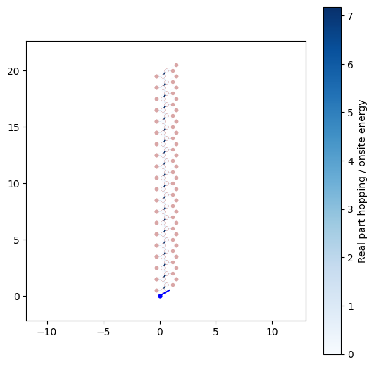
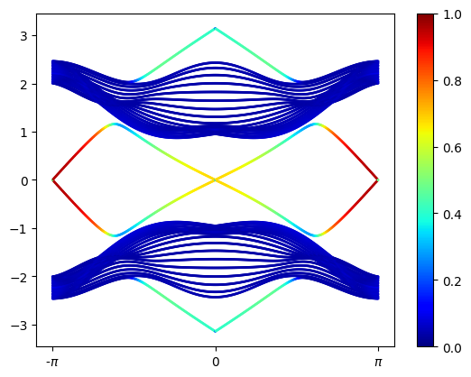
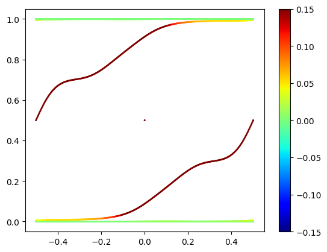
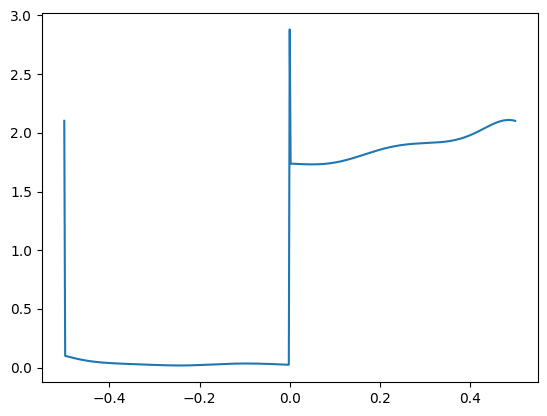
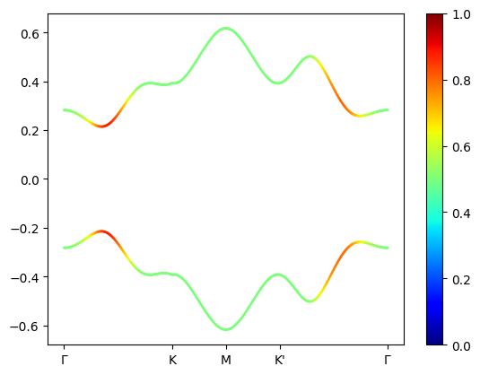

# Contruyo el operador de Floquet para una nanocinta zig-zag siguiendo a I.C.FulgaW =20T =1Ju =0.225*4/TJs = pi/2*4/Tt2 =0#0.03+0.1jtb1=Kitaev_Honeycomb(t2=t2,Jx=Ju+Js,Jy=Ju,Jz=Ju).cut_piece(W,0)tb2=Kitaev_Honeycomb(t2=t2,Jx=Ju,Jy=Ju+Js,Jz=Ju).cut_piece(W,0)tb3=Kitaev_Honeycomb(t2=t2,Jx=Ju,Jy=Ju,Jz=Ju+Js).cut_piece(W,0)tb4=Kitaev_Honeycomb(t2=t2,Jx=Ju,Jy=Ju,Jz=Ju).cut_piece(W,0)tb1.visualize(1,0)k_vec,k_dist,k_node=tb1.k_path([-0.5,0,0.5],501,report=False)from scipy.linalg import expmF = [ expm(-1j*T*tb1._gen_ham(k)/4)@expm(-1j*T*tb2._gen_ham(k)/4)@expm(-1j*T*tb3._gen_ham(k)/4)@expm(-1j*T*tb4._gen_ham(k)/4) for k in k_vec]Ek,evec=[],[]for i,k inenumerate(k_vec):eval,eve = np.linalg.eig(F[i])# Nicefy processeval=real(1j*log(array(eval))/T) # Quasienergy args=eval.argsort()eval=eval[args] eve = eve.T eve = eve[args] Ek.append(eval) evec.append(eve)Ek=array(Ek)evec=array(evec)IPR=sum(abs(evec)**4,2).T

Code
for i,band inenumerate(Ek.T): scatter(k_dist,band,s=1,c=IPR[i],vmax=1,vmin=0, cmap="jet")colorbar()xticks(k_node,["-$\pi$",0,"$\pi$"]);

Vemos estados localizados en \(E=0\) y (para \(T>1.7\)) en \(E=\pm\pi\). Estos ultimos son consecuencia de la existencia de un modo cero en la estructura original el cual surge de romper la simetria de subred en la frontera de la nanocinta zig-zag, no dependen de la simetria particula-hoyo o la reversión temporal, analogo al caso del grafeno.
4 Entanglement entropy
Calculo esta entropía en el espacio k de la nanocinta de red hexagonal.
Code
def EEntropy(Ek,evec): nF=len(evec[Ek<0]) # Number of states on the Fermi sea P=np.sum([evec[l][:,None]*np.conjugate(evec[l]) for l inrange(nF)],0) C=P[0:nF,0:nF] ζ=sort(np.linalg.eigvals(C))[nF//2:nF] # Here we use chiral simmetry ζ=np.array([z for z in ζ if(z!=0and z!=1)]) # We remove the eigenvalues that dont contribute SEE=-sum((1-ζ)*np.log(1-ζ)+ζ*np.log(ζ))return2*SEEdef C_Spectre(evec): nF=len(evec)//2# Number of states on the Fermi sea P=np.sum([evec[l][:,None]*np.conjugate(evec[l]) for l inrange(nF)],0) C=P[0:nF,0:nF] ζ=list(sort(np.linalg.eigvals(C)))return ζSee = real([ EEntropy(Ek[i],evec[i]) for i,k inenumerate(k_vec)])C_spec= array([ real(C_Spectre(evec[i])) for i,k inenumerate(k_vec)])
Code
for i,band inenumerate(C_spec.T): scatter(k_vec,band,s=1,c=-(band*np.log(band)+(1-band)*log(1-band)),vmax=0.15,vmin=-0.15, cmap="jet")colorbar();
C:\Users\gozu0\AppData\Local\Temp\ipykernel_33052\2703330373.py:2: RuntimeWarning: invalid value encountered in log
scatter(k_vec,band,s=1,c=-(band*np.log(band)+(1-band)*log(1-band)),vmax=0.15,vmin=-0.15, cmap="jet")
C:\Users\gozu0\AppData\Local\Temp\ipykernel_33052\2703330373.py:2: RuntimeWarning: divide by zero encountered in log
scatter(k_vec,band,s=1,c=-(band*np.log(band)+(1-band)*log(1-band)),vmax=0.15,vmin=-0.15, cmap="jet")
C:\Users\gozu0\AppData\Local\Temp\ipykernel_33052\2703330373.py:2: RuntimeWarning: invalid value encountered in multiply
scatter(k_vec,band,s=1,c=-(band*np.log(band)+(1-band)*log(1-band)),vmax=0.15,vmin=-0.15, cmap="jet")

Code
plot(k_vec,See/log(2))

Code
# Contruyo el operador de Floquet para una red 2D del modelo hexagonal de Kitaev T =4Ju =0.225#*4/TJs = pi/2#*4/Tt2 =0tb1=Kitaev_Honeycomb(t2=t2,Jx=Ju+Js,Jy=Ju,Jz=Ju)tb2=Kitaev_Honeycomb(t2=t2,Jx=Ju,Jy=Ju+Js,Jz=Ju)tb3=Kitaev_Honeycomb(t2=t2,Jx=Ju,Jy=Ju,Jz=Ju+Js)tb4=Kitaev_Honeycomb(t2=t2,Jx=Ju,Jy=Ju,Jz=Ju)k_vec,k_dist,k_node=tb1.k_path([[0,0],[2/3,1/3],[1/2,1/2],[1/3,2/3],[0,0]] ,501,report=False)from scipy.linalg import expmF = [ expm(-1j*T*tb1._gen_ham(k)/4)@expm(-1j*T*tb2._gen_ham(k)/4)@expm(-1j*T*tb3._gen_ham(k)/4)@expm(-1j*T*tb4._gen_ham(k)/4) for k in k_vec]Ek,evec=[],[]for i,k inenumerate(k_vec):eval,eve = np.linalg.eig(F[i])# Nicefy processeval=real(1j*log(array(eval))/T) # Quasienergy args=eval.argsort()eval=eval[args] eve = eve.T eve = eve[args] Ek.append(eval) evec.append(eve)Ek=array(Ek)evec=array(evec)IPR=sum(abs(evec)**4,2).Tfor i,band inenumerate(Ek.T): scatter(k_dist,band,s=1,c=IPR[i],vmax=1,vmin=0, cmap="jet")colorbar()xticks(k_node,["$\Gamma$","K","M","K'","$\Gamma$"]);

Code
import plotly.graph_objects as goimport pandas as pdimport itertools as itertoolsNk=100Kx=np.linspace(-1,1,Nk)Ky=np.linspace(-1,1,Nk)L_k = np.array(list(itertools.product(Kx, Ky)))Ek,evec=[],[]for i,k inenumerate(L_k): F = expm(-1j*T*tb1._gen_ham(k)/4)@expm(-1j*T*tb2._gen_ham(k)/4)@expm(-1j*T*tb3._gen_ham(k)/4)@expm(-1j*T*tb4._gen_ham(k)/4)eval= np.linalg.eigvals(F)eval=sort(real(1j*log(array(eval))/T)) Ek.append(eval)L_Ek=array(Ek).TBands = [L_Ek[i].reshape((Nk,Nk)) for i inrange(len(L_Ek))]fig = go.Figure(data=[go.Surface(z=Bands[0], x= Kx, y=Ky,colorscale='twilight', cmin=-2, cmax=2)]+[go.Surface(z=Band, x= Kx, y=Ky, showscale=False, colorscale='twilight', cmin=-2, cmax=2) for Band in Bands[1:]])fig.update_layout(title='Floquet band structure of driven Kitaev model',autosize=False, width=500, height=500, margin=dict(l=65, r=50, b=65, t=90), scene = {"xaxis": {"nticks": 4},"yaxis": {"nticks": 4},"zaxis": {"nticks": 4},# 'camera_eye': {"x": 0, "y": -1, "z": 0.5},"aspectratio": {"x": 1, "y": 1, "z": 1} })fig.show()
Unable to display output for mime type(s): application/vnd.plotly.v1+json
No hay degeneración en las bandas, podemos calcular facilmente el número de Chern.
Primero, deseo visualizar la curvatura de Berry.
Code
# Contruyo el operador de Floquet para una red 2D del modelo hexagonal de Kitaev def Kitaev_Driven(k_vec,Ju,Js,T=1,t2=0,eig_vectors=False): tb1=Kitaev_Honeycomb(t2=t2,Jx=Ju+Js,Jy=Ju,Jz=Ju) tb2=Kitaev_Honeycomb(t2=t2,Jx=Ju,Jy=Ju+Js,Jz=Ju) tb3=Kitaev_Honeycomb(t2=t2,Jx=Ju,Jy=Ju,Jz=Ju+Js) tb4=Kitaev_Honeycomb(t2=t2,Jx=Ju,Jy=Ju,Jz=Ju)from scipy.linalg import expm F = [ expm(-1j*T*tb1._gen_ham(k)/4)@expm(-1j*T*tb2._gen_ham(k)/4)@expm(-1j*T*tb3._gen_ham(k)/4)@expm(-1j*T*tb4._gen_ham(k)/4) for k in k_vec] norb,nkp =len(F[0]), len(k_vec)if(eig_vectors==False): ret_eval=np.zeros((norb,nkp),dtype=float)for i,k inenumerate(k_vec):eval= np.linalg.eigvals(F[i]).T ret_eval[:,i]=sort(real(1j*log(array(eval[:]))/T))return ret_evalelse: ret_eval=np.zeros((norb,nkp),dtype=float) ret_evec=np.zeros((norb,nkp,norb),dtype=complex)for i,k inenumerate(k_vec):eval,eve = np.linalg.eig(F[i])# Nicefy processeval=real(1j*log(array(eval))/T) # Quasienergy args=eval.argsort()eval=eval[args] eve = eve.T eve = eve[args] ret_eval[:,i]=eval[:] ret_evec[:,i,:]=eve[:,:]return ret_eval,ret_evecT =4Ju =0.225#*4/TJs = pi/2#*4/Tt2 =0k_vec,k_dist,k_node=tb1.k_path([[0,0],[2/3,1/3],[1/2,1/2],[1/3,2/3],[0,0]] ,301,report=False)Ek,evec = Kitaev_Driven(k_vec,Ju,Js,eig_vectors=True)IPR=sum(abs(evec)**4,2)for i,band inenumerate(Ek): scatter(k_dist,band,s=1,c=IPR[i],vmax=1,vmin=0, cmap="jet")colorbar()xticks(k_node,["$\Gamma$","K","M","K'","$\Gamma$"]);